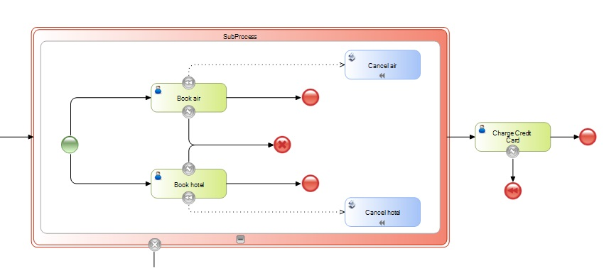

It allows indicating that an activity must be compensated. It happens when a subprocess is canceled and its activities need to be rolled back.
The activity to be compensated must be identified with an event attribute–BPMN doesn’t specify which one should be used. This activity must be included in the same process as the Compensate End Event; in addition, it must have an attached Compensate Intermediate Event. If the activity to compensate is not specified, all the activities that have been successfully completed and have an attached compensation event will be compensated.
The figure below shows an example of this modeling pattern. In this case, an error in the Charge Credit Card task will activate the Compensate End Event, and the activities with a Compensate Intermediate Event attached will be rolled back.

Objects: Business Process Diagram
Compensate Intermediate Event
Cancel End Event
Error End Event in BPD
Cancel Intermediate Event
| Backlinks | |
| BPD End Events | Toc:GeneXus BPM Suite |